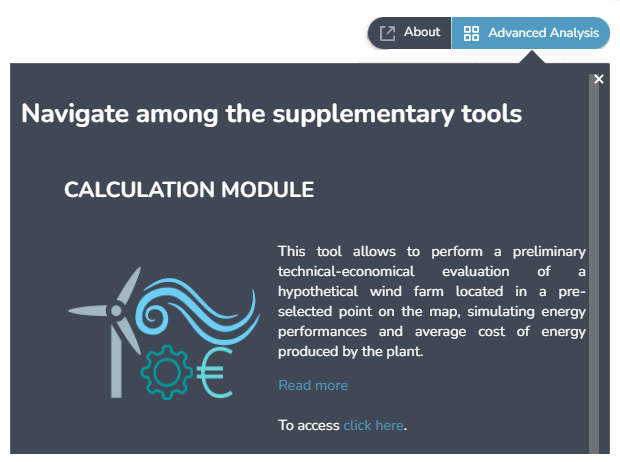
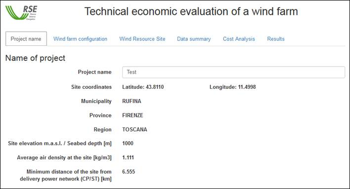
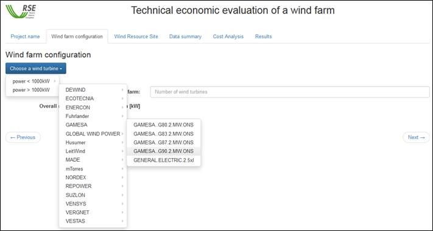
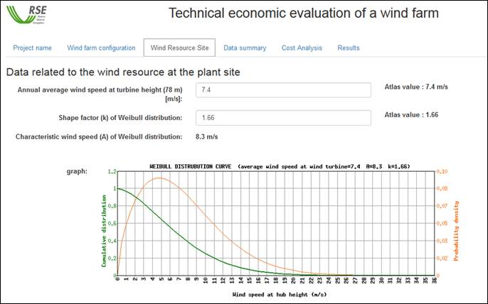
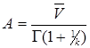
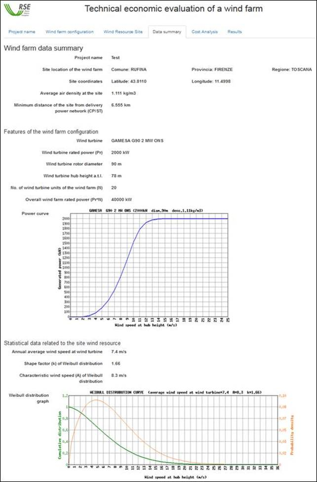
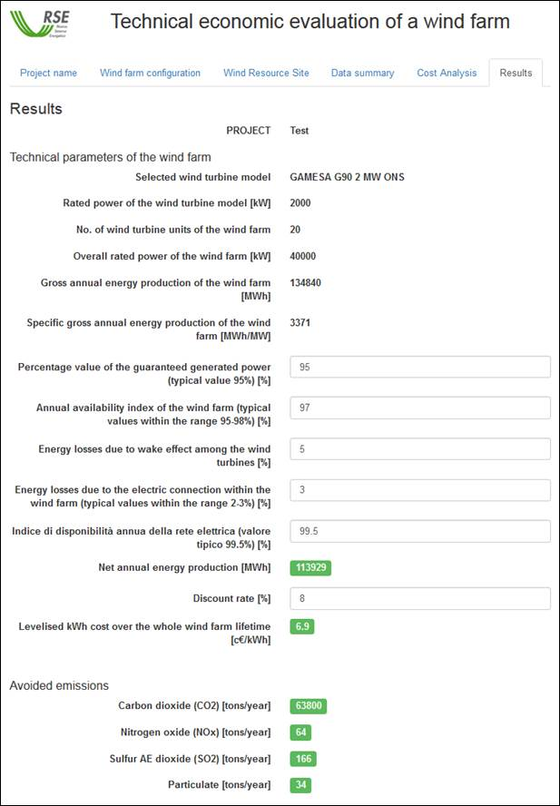

Instructions and Notes for Using the Module for Technical and Economic Evaluation of a Wind Farm
The module for the technical and economic evaluation allows the assessment of the energy performances and the average cost of the energy produced for a hypothetical wind farm user defined in a point on the map by the mouse.
Access to the technical-economic evaluation form takes place through the "Advanced Analysis" function. After pressing the "click here" button, a grid will be displayed in which the territory is discretized. It is necessary to increase the visualization scale (zoom-in) and click on the map to indicate the position of the construction site of the wind farm hypothesis. A new window will then open.

After you pressed the button "Performance calculation" you must click on the map to indicate the location of the hypothetical wind farm. This will open a new window.

The performance calculation module is divided into six panels.
The first panel , allows the user to enter a name for the project. Informations/data about the localization of the user defined site are shown as the geographical coordinates (WGS84 latitude and longitude) of the clicked point. The Municipality, the Province and the Region the site belong to. From the orography map the data of altitude above sea level (or depth seabed if the point is chosen offshore) is automatically set. Correspondingly the air density is calculated for that altitude; if the selected point is located on the sea the air density is calculated at sea level. The latest data presented on the panel are the minimum distance of point chosen for the realization of wind farm from electrical infrastructure (primary stations, substations) of possible connection for the transfer of production to the electricity grid.
In the second panel the user makes the choice of the model of wind turbine to use as generating units for the wind farm and defines it's size. The blue button on the left allows to select the wind turbine.

The list of wind turbines is compiled by a database query; machines listed are classified into two groups according to size (Power less than 1000 kW and greater) and the manufacturer.
Selecting an item from the list shows the name of the wind turbine chosen, its rated power and the rotor diameter. The bottom of the panel shows the power curve of the wind turbine adjusted according the value of the average density of the air of the site (IEC 61400-12 Wind turbine power performance testing).

The user can then select the hub height among those allowed for the wind turbine. The user must also enter the total number of turbine of the wind farm. The nominal power of the park is calculated multiplying the rated power of the wind turbine by the number of turbine entered.
The third panel shows the data about to the wind resource returned by the wind maps of the atlas for the height a.t.l. / a.s.l.: 50, 75, 100, 125 e 150 meters. To evaluate the production of a site we also need to know the statistical distribution of the wind intensity since the power produced by a wind turbine is a non-linear function of the wind velocity. The usual distribution employed to describe the statistics of the wind is the two-parameter Weibull distribution, whose density probability function is defined by the following relation:
 A>0, k>0
A>0, k>0
where v is the wind speed, A the scale parameter (also known as the characteristic speed) and k the shape factor.
From annual average wind speed maps (at height of 50, 75, 100, 125 e 150 m a.t.l.) the speed at hub height is calculated for the chosen wind turbine. The value is shown in the first textbox. The second textbox shows the shape factor k taken from the Atlas too.

The Weibull distribution characteristic speed A is a function of the mean wind speed and the shape factor k. A is automatically calculated and reported in the panel. The formula used for the calculation of A is the following:

Where
 is the annual average wind speed
interpolated at hub height and
is the annual average wind speed
interpolated at hub height and is
the Euler gamma function.
is
the Euler gamma function.
The curve located in the lower part of the panel shows the Weibull distribution and its cumulative according to the values of A and k reported.
Please note that the average speed at hub height and the form factor k can be modified by the user. Correspondingly, the characteristic velocity A and the graph are updated. This is useful when you have information about wind resource of the site related (e.g.) to the execution of a monitoring campaign in site itself, or when you want to conduct assessments for particular shapes of distribution (eg Rayleigh distribution characterized by factor k = 2).
The fourth panel contains a summary of the data selected/entered for evaluation. From top to bottom are shown: position data, the characteristics and the number of turbines of the wind farm. Then thew power curve of the chosen turbine, statistical data describing the characteristics of the wind resource and the distribution curve that qualify the variability of the wind resource of the site.

The fifth panel contains the data for the analysis of costs, divided into investment costs and management of the wind farm.

In this panel the user can enter the economic and technical parameters needed to obtain the final results that will be set out in the next panel, the last one of the calculation module. These results essentially consist of the expected energy production of the wind farm, the average cost of the unit (kWh) of energy produced and the emissions of greenhouse gases in the atmosphere that would be avoided if the wind farm were built.
The input data that can be trimmed according to the User's will are the following:
For the convenience of the User, some orienting indications are given in the following with regard to possible cost values that could be implemented in the calculation module in want of more specific data for the assumed wind farm.
Specific capital cost of the wind farm (without grid connection facilities)
The lower values in this interval are applicable to installations with multiple wind turbines at easily accessible sites where orography does not feature particularly complex terrains; the upper values are, on the contrary, rather representative of mountain sites, or however sites that are generally more difficult to exploit, with regard to both the installation of wind turbines and the electrical interconnections inside the wind farm area.
It is worth stressing once more that the values given above are not comprehensive of the cost of grid connection infrastructure outside the wind farm area.
These values are only a rough indication of the specific capital costs of offshore wind farms built in sea areas where water is rather shallow, namely less than 30 m deep, and distances from the coastline are in the 5-20 km range.
Here too, it is worth stressing that the values given above are not comprehensive of the cost of grid connection infrastructure outside the wind farm area.
Cost per kilometre of the line connecting an on-shore wind farm to the public electricity grid.
This range of costs is referred to the transportation of the overall rated power (capacity) of the wind farm and, consequently, it takes into account also the total number of lines needed to carry such power to the grid connection point. The upper value, albeit roughly estimated, can be held as representative of cases where electric powers of the order of some tens of megawatts are transported by two/three-circuit lines with suitable characteristics.
According to a commonly used practice, a wind farm is divided into sub-arrays of the same capacity for more flexibility and reliability of plant operations. The rated power of each sub-array is usually in the 5-10 MW range, depending on terrain characteristics (orography) and distance from the grid connection point where produced energy has to be delivered.
Each sub-array is connected to the grid connection point (delivery point) by its own single-circuit cable line. The cost of each single-circuit line can be estimated as follows:
The cost of each single-circuit line can be estimated as follows:
- for each sub-array of 5-8 MW capacity (output voltage 20 kV) with a maximum distance of about 10 km from the grid connection point: the cost is 90-100 k€/km (for each single-circuit line running in its conduit);
- for each sub-array of 8-10 MW capacity (output voltage 30 kV) with a maximum distance of about 20 km from the grid connection point: the cost is 100-120 k€/km (for each single-circuit line running in its conduit);
The above costs are reduced by about 20% per sub-array in cases where two or more circuits are laid within the same cable conduit.
Like the preceding item, the upper cost value can be held as representative of cases where electric powers of the order of some tens of megawatts are transported.
The above costs are referred to the transportation of powers between 10 MW and 100 MW.
The above costs are referred to the transportation of powers between 10 MW and 100 MW.
Cost per kilometre of the line connecting an off-shore wind farm to the electricity grid on the mainland.
For this kind of plant there is not yet enough information/data to indicate a cost range within which the costs of technically feasible grid connection designs for delivering its whole production to the mainland's electrical system can be set with reasonable certainty.
In order to enable the User to carry out the economic evaluations implemented in the calculation module for these wind farms as well, an equation has been reported hereunder that was suggested in publication [1] to get a very preliminary, rough estimate of the cost per kilometre to be borne to connect an offshore wind farm of substantial capacity, including the cost of all the other grid-connecting equipment required. The cost per kilometre can thus be estimated from the following relationship:
Ckm = A + B * P
where the quantities appearing on the right-hand side should be given the values defined as follows:
A : the value is to be chosen within the range 0.1- 0.25 M€/km (if cables are simply laid on the sea floor); 0,25- 0.5 M€/km (if cables are laid in trenches e.g. by the "jetting" technique, or are sheltered by suitable covers);
B : the value is to be chosen within the range 1.2 - 1.8 k€/(MVA*km);
P : this is the apparent power to be transported, expressed in MVA.
It has to be noted that, whenever the above equation is used to estimate Ckm, the value 0 (zero) must be entered in the box relating to "Cost of the infrastructure necessary for connection to the grid".
Cost of MV and HV infrastructure (HV/MV transformer, MV and HV bays etc.) at the grid connection point for onshore wind farms
It should first be pointed out that, to provide sufficiently reliable estimates of the order of magnitude of this cost item, it would be necessary to know in advance the specific technical solution to be implemented for connecting the wind farm to the grid (simple shunt connection to an existing line, by-pass connection to an existing line, radial connection to an existing or a purposely built HV/MV substation etc.).
In Italy, the grid connection of production plants is currently regulated by Deliberations ARG/elt 125/10 and 99/08 issued by the Regulatory Authority for Electricity and Gas. In addition grid operators, and particularly the Transmission System Operator (Terna S.p.A.) that runs the national HV transmission grid, have their own Grid Codes specifying requirements for connecting generating plants. It is not possible to summarise the whole matter here. Generally speaking, it is worth recalling that a distinction should be made between the wind farms of rated power below 10 MW and those of greater capacity, as the former are given a different dealing from the latter as regards both the grid-connection procedure and the relevant technical requirements. The grid connection voltage depends on generating plant capacity: at present, in Italy, MV connection is allowed up to 6 MW, while higher capacities are connected to HV bus-bars, unless specific reasons advise for other solutions. Lastly it should also be taken into account that, in Italy, a wind farm owner could be asked by the grid operator to bear at least a part of the cost of any upgrading that the grid operator had to make on its own grid, downstream of the grid connection point, to accommodate the power fed by the new plant. Since these costs are very difficult to quantify in advance and may change considerably from one case to another, they are not considered in the following, even though the User is hereby warned that this possible additional burden must not be neglected.
Two typical cases of grid connection of a wind farm (up to and above 6 MW, respectively) are shown hereunder as examples, drawing on the most typical schemes so far implemented in Italy. Other schemes, however, could well be adopted: for instance, a wind farm above 6 MW could be connected also through an HV overhead line, instead of several MV buried cable lines, if no environmental constraints were to be imposed by local Authorities.

Wind farms of capacity up to 6 MW (occasionally even higher capacity) can feed their generated power into the MV bus-bars of the grid. In addition to the already mentioned cost of the cable line, another cost to be considered is the cost of the building housing the power delivery equipment (in yellow in the figure), which includes, besides electric panels and (possibly) the wind farm control room, also the room, belonging to the owner of the wind farm and relevant MV line, where power is delivered to the grid operator (grid connection point). The cost of these facilities can be estimated of the order of 90-120 k€.

For wind farms of capacity greater than 6 MW that are connected according to this scheme, the wind farm owner must build also a step-up transformer substation where voltage is raised to 132 kV or 150 kV (in yellow in the figure) for power to be fed straight into the HV grid; the cost of this additional facility depends on the rated power of the wind farm as well as on the technical solution required for the step-up substation by the operator/owner of the HV grid (shunt or by-pass connection etc.); however, the overall cost of the electrical substation, which has to be added to that of the power transport line, can be estimated within the range of 1200-2400 k€.
The costs given above for all kinds of electrical infrastructure are mere indications and are provided to put a User that is not familiar with these matters in a position to carry out a preliminary economic evaluation through the calculation module; it goes without saying that this first attempt should later be followed by a better-grounded estimation based on reliable economic data drawn from more in-depth analyses of the specific wind farm under consideration.
It should also be noted again that the costs indicated above may represent only a part of the many cases that can come up during the design and construction of the grid connection infrastructure of a wind farm.
The real total cost of this infrastructure can therefore turn out even somewhat different from the values given above depending on the specific area or environment where the infrastructure has to be located and developed.
For instance, when an electric line has to be constructed, the various characteristics of the land (orography, geological properties of the soil, environmental worth of the area involved etc.) can well bring about far-from-negligible variations in some cost items, which can in turn affect significantly the cost of the whole work.
It has to be pointed out that operation and maintenance (O&M) costs are here considered under the two forms already mentioned above (fixed and variable O&M costs), which the module will then add together; actually, the default values given by the module refer only to fixed annual O&M costs, but the User can then change his choice as he prefers, even by combining values of both parameters.
As regards the annual expenditure ensuing from agreements with land owners, local authorities etc., it has to be underlined that this burden is very variable and depends on local market conditions. The relevant default values given by the module are quite approximate and are absolutely not to be intended as representative of average market conditions.
In addition, it has to be noted that the useful lifetime of a wind farm assumed for calculating the average unit cost of energy (c€/kWh) is always 20 years, as indicated in the relevant box.
The last panel reports the results of the evaluation.

The user can customize the values of the following technical paramenters of the wind farm operations:
The same panel sets out the results of the evaluation carried out on the assumed wind farm in the light-green boxes; specifically, these boxes provide values of the following quantities:
a) net annual energy production of the wind farm (NET ANNUAL ENERGY PRODUCTION): estimate of the energy (MWh) that can, on average, be produced in a year by the wind farm after deducting all the losses mentioned above;
b) levelised unit cost of energy (c€/kWh) over the whole wind farm lifetime: estimate of the average cost of a kilowatt-hour produced by the wind farm under consideration, calculated over a period equalling the whole useful lifetime of the plant;
c) avoided emissions: approximate calculation of the emissions (metric tons/year) of greenhouse gases (CO2, NOx and SO2) and particulate that would be avoided in a year thanks to the energy produced by the wind farm.
The quantity mentioned under a) is obviously derived from the gross annual energy production of the wind farm (GROSS ANNUAL ENERGY PRODUCTION), which is, in turn, obtained by calculating the specific gross annual energy production of the chosen wind turbine model at the wind farm site (expressed as MWh/MW of the machine's rated power) and by multiplying this result by the overall rated power of the wind farm (MW).
With regard to the specific gross annual energy production, it is worth recalling here that this quantity represents the annual number of equivalent hours of operation of the wind turbine at full rated capacity; it is calculated from the power curve of the chosen wind turbine model adjusted to the site conditions, and from the wind resource available at the same site, which is described by the Weibull wind speed distribution defined by its characteristic parameters: A (characteristic wind speed or scale factor) and k (shape factor).